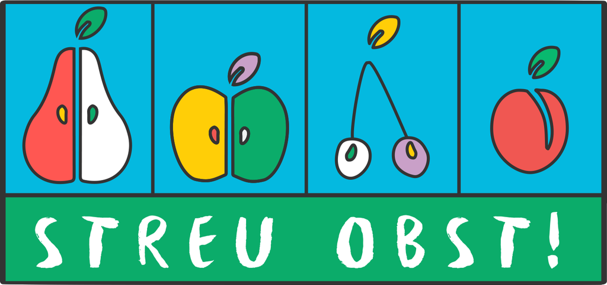

<nav class="navbar navbar-inverse navbar-fixed-top" id="navbar_streu">
  <div class="container-fluid">
    <div class="navbar-header">
      <button id="nav_btn_dropdown" type="button" class="navbar-toggle collapsed" data-toggle="collapse" data-target="#bs-example-navbar-collapse-2">
        <span class="sr-only">Toggle navigation</span>
        <span class="icon-bar"></span>
        <span class="icon-bar"></span>
        <span class="icon-bar"></span>
      </button>
     
      <a href="#" class="pull-left" style="margin-right: 20px;"></a>
    </div>

    <div class="collapse navbar-collapse" id="bs-example-navbar-collapse-2">
      <ul class="nav navbar-nav">
        <li id="nav_btn_user"><a href="#">Meine Wiesen</a></li>
      </ul>

      <ul class="nav navbar-nav navbar-right">
        <li id="nav_scan_qr_btn"><a href="#">Baum QR-Code scannen</a></li>
        <li id="nav_btn_baum_anlegen"><a href="#">Baum anlegen</a></li>
        <li id="nav_btn_ubersicht"><a href="#">Übersicht</a></li>
        <li id="nav_btn_karte"><a href="#">Karte</a></li>
        <li id="nav_btn_logout"><a href="#">Logout</a></li>
      </ul>
    </div>
  </div>
</nav>